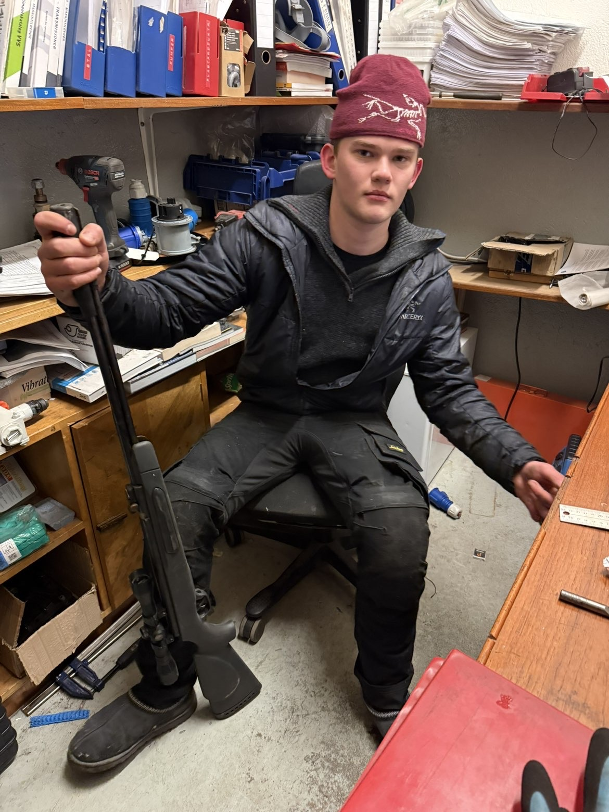
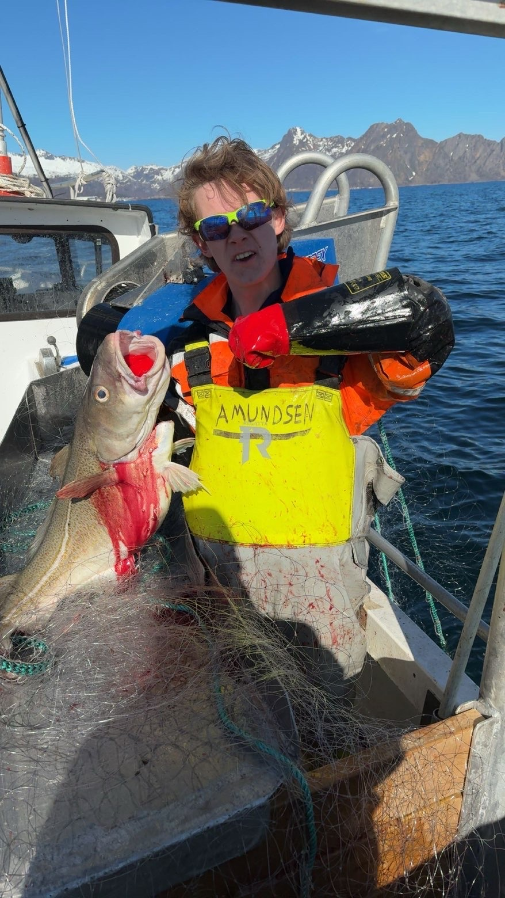
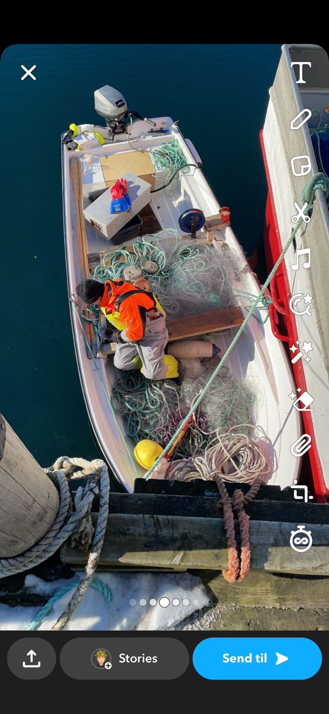
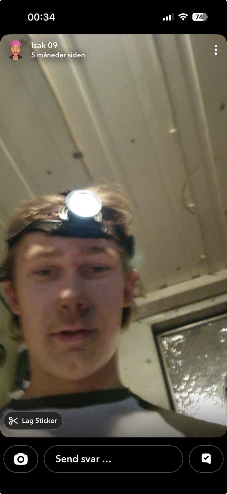
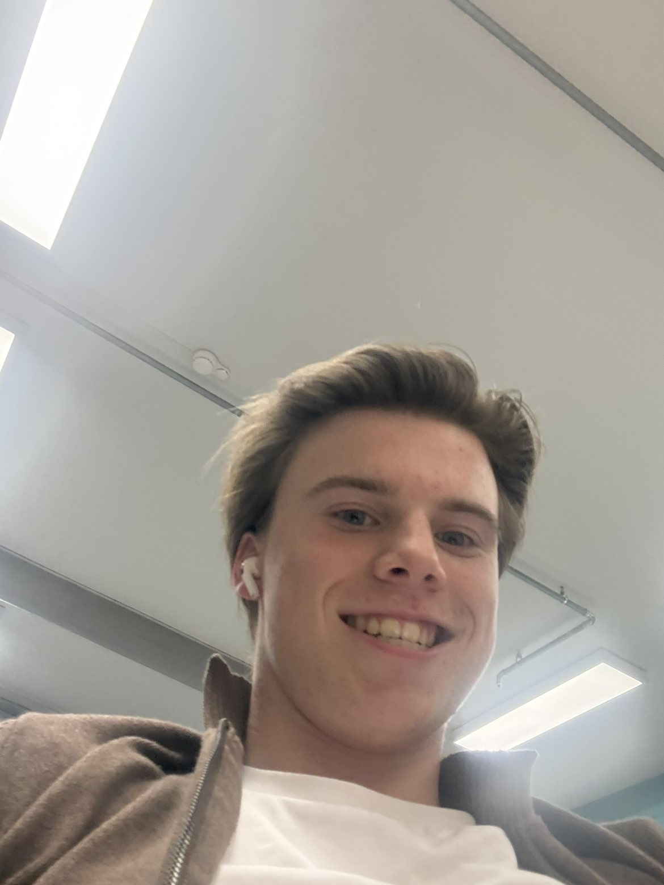
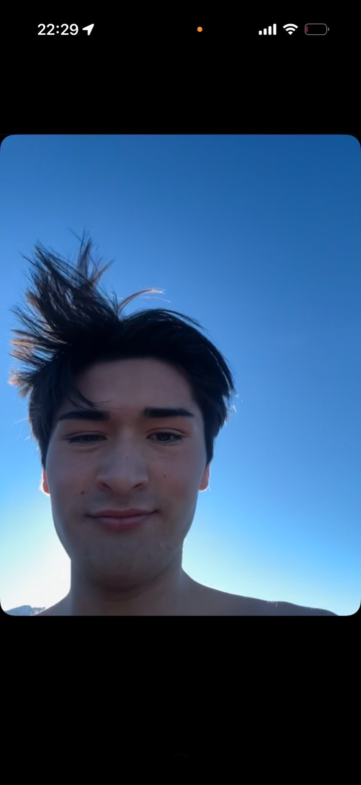
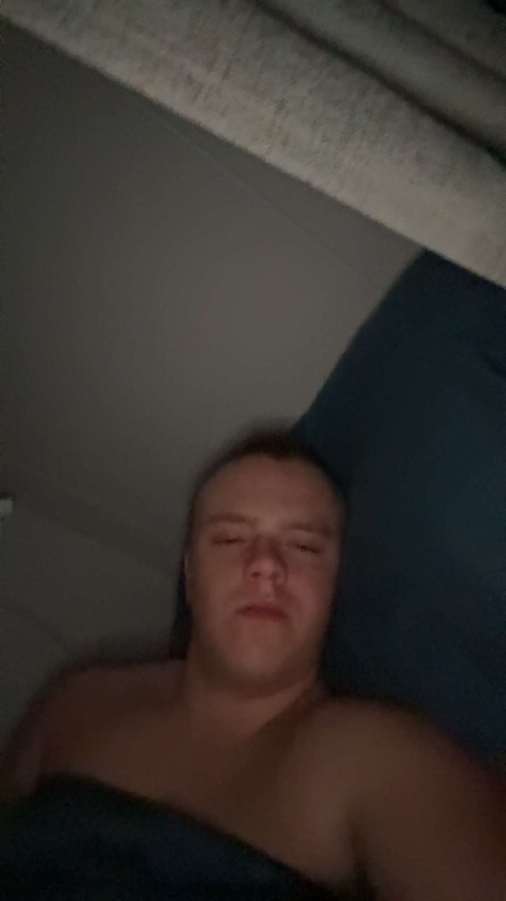
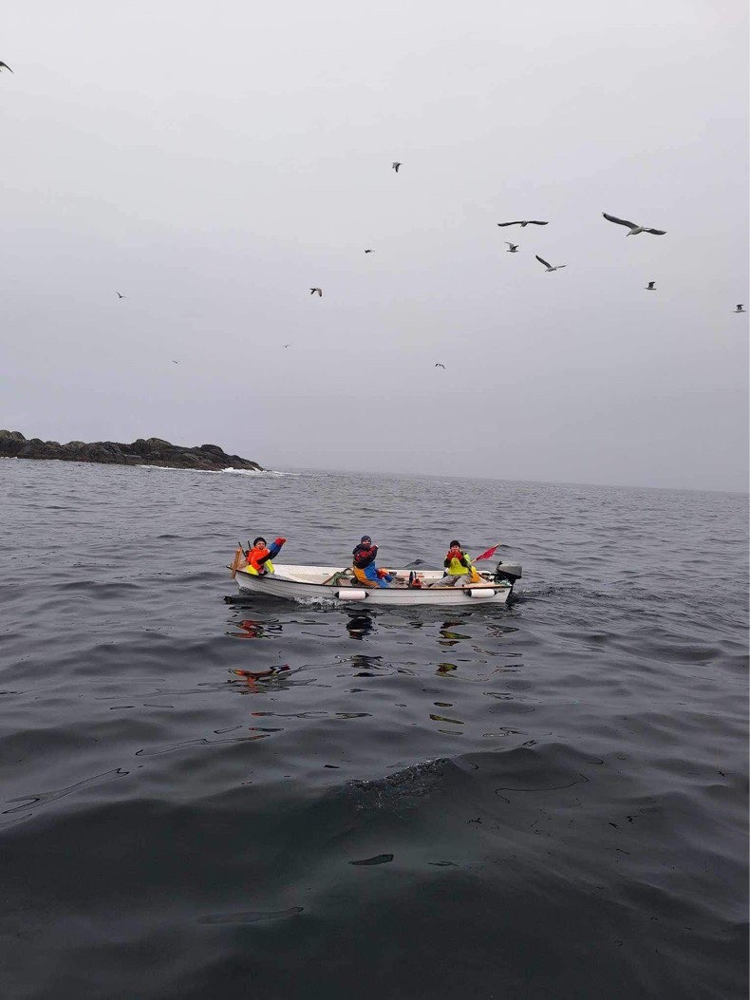
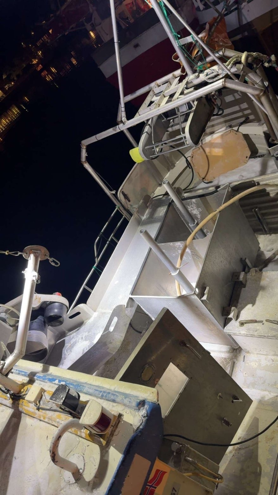

Utplasseringselev
Eirik
Utplasseringselev som får kjenne på arbeidslivet om bord. Lærer garnarbeid, fangsthåndtering og livet på sjøen – og har ifølge mannskapslista sparken.
Amundsen Joss & Ball driver garnfiske etter kvitfisk i Lofoten. Her handler det om sjøvær, garn, fangst, lange dager og et mannskap som får jobben gjort.

Fisket foregår med garn på aktuelle fiskefelt i Lofoten. Garnene settes der forholdene og erfaringen tilsier at kvitfisken står, får fiske og trekkes deretter tilbake til sjarken. Ombord løsnes fangsten fra garnet, sorteres og håndteres før levering. Vær, strøm, dybde, sesong og fiskens vandring gjør at ingen tur er helt lik.

En sjark gir kort vei mellom styrhus, garn og fangst. Det betyr effektiv drift, men også at orden på dekk og godt samarbeid er viktig. Garn skal settes kontrollert, trekkes sikkert og klargjøres for neste setting.
Sveip sidelengs på mobilen for å se hele gjengen.

Utplasseringselev som får kjenne på arbeidslivet om bord. Lærer garnarbeid, fangsthåndtering og livet på sjøen – og har ifølge mannskapslista sparken.

Sjef og stor-shipper. Holder kontroll på drift, fiskefelt, garn, fangst og resten av gjengen.

Styrmann og teknisk altmuligmann. Navigasjon, mekanikk og elektrisk er en del av ansvarsområdet når ting skal fungere på sjøen.

HMS-ansvarlig med fokus på sikker arbeidsflyt, orden på dekk og at mannskapet kommer seg gjennom dagen med fingrene i behold.

Shipper og reder for M/S May. Bidrar både på sjøen og rundt drifta når fangsten skal om bord og båten holdes i gang.
Garn er passive fiskeredskaper som står i sjøen og fanger fisk når den svømmer inn i maskene. Garnlenker kan settes på eller nær bunnen, og plassering og ståtid tilpasses fisket og forholdene.
Når garnet trekkes, kommer redskap og fangst tilbake til sjarken. Fisken tas løs fortløpende, mens garnet kontrolleres og gjøres klart til videre bruk.
Torsk og skrei er sentrale arter i Lofoten, mens blant annet sei og hyse også kan inngå i fangsten. Størrelse og sammensetning varierer mellom felt og tidspunkt.
Etter at fisken er tatt ut av garnet må den håndteres effektivt. Sortering, sløying og god behandling om bord er viktig for kvaliteten på fangsten.
Vind, bølger, strøm og sikt påvirker arbeidet. På en mindre sjark merkes forholdene raskt, og sikkerhet og vurderinger underveis er en viktig del av drifta.
Lofoten har en lang historie knyttet til sesongfiske etter torsk. Når skreien kommer inn mot kysten, samles fiskeriaktivitet rundt de produktive feltene.

Jobben stopper ikke når fisken er kommet over rekka. Fangsten skal ut av garnet, behandles og gjøres klar for levering. Effektiv håndtering om bord betyr bedre flyt gjennom hele fiskedagen.



Ta styringa på sjarken. Sett garn, trekk torsk, skrei, sei og hyse, bygg opp kapital og oppgrader utstyret. Større fisk gir mer fangst og mer penger.
Oppgrader: garn · lasterom · sjark · garnhaler · ekkolodd · kjøling
START SJARKSPILLET →